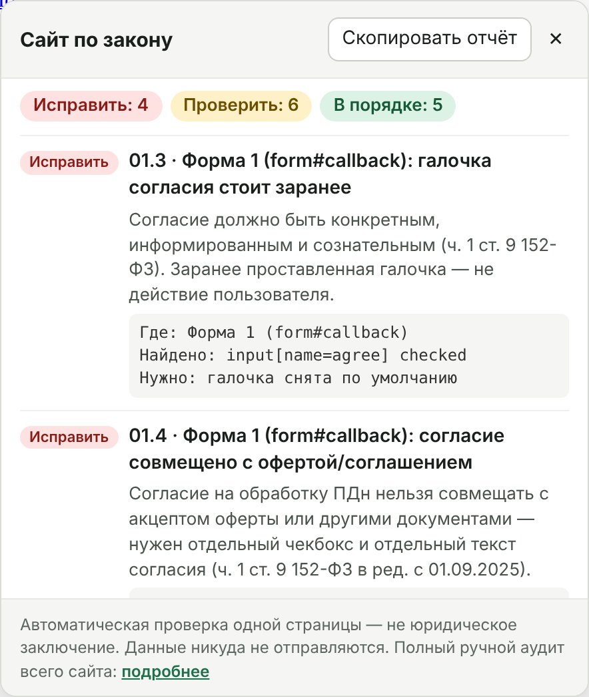

Бесплатная проверка формы заявки, согласия на обработку персональных данных, cookie и русского языка. Одна кнопка в браузере — отчёт за несколько секунд, со ссылкой на норму к каждой находке.
Перетащите кнопку «§ Проверить сайт» на панель закладок, откройте свою страницу с формой и нажмите закладку. Проверка работает только в вашем браузере и ничего никуда не отправляет.
Нужен компьютер с Chrome, Яндекс Браузером, Edge или Firefox. Регистрация не нужна.
Перетащите кнопку «§ Проверить сайт» на панель закладок. Если панели не видно — Ctrl+Shift+B (на Mac — Cmd+Shift+B).
Заявка, обратный звонок, оформление заказа или подписка — там, где посетитель оставляет имя, телефон или почту.
Поверх страницы появится отчёт: что исправить, что проверить вручную и что уже в порядке. Его можно скопировать и отправить разработчику.
17 пунктов по 152-ФЗ, закону о рекламе, закону о защите прав потребителей и требованиям к русскому языку. Полный список с нормами — в чек-листе.
| Что | Как смотрим | Норма |
|---|---|---|
| Согласие на обработку ПДн | У каждой формы есть своя галочка, она не проставлена заранее, не совмещена с офертой и ведёт на отдельный текст согласия. | ч. 1 ст. 9 152-ФЗ |
| Политика обработки ПДн | Ссылка есть, страница открывается, в ней указан оператор с ИНН и описаны cookie. | ч. 2 ст. 18.1 152-ФЗ |
| Cookie и счётчики | Какие счётчики стоят, есть ли уведомление и можно ли в нём отказаться. | 152-ФЗ, позиция РКН |
| Иностранные сервисы | Google Analytics, Tag Manager, reCAPTCHA, пиксели, формы Google и Typeform. | ч. 5 ст. 18 152-ФЗ |
| Рекламная рассылка | Если форма — подписка, есть ли отдельная галочка на рекламу. | ч. 1 ст. 18 38-ФЗ |
| Русский язык | Меню и кнопки, написанные только латиницей. | закон о гос. языке, с 01.03.2026 |
| Реквизиты продавца и HTTPS | ИНН или ОГРН на странице, защищённое соединение. | ст. 26.1 ЗоЗПП |

Проверка смотрит одну открытую страницу. Пройдите ею по всем страницам с формами — или закажите полный аудит.
Когда страниц и форм много, а разбираться некогда, — проверим весь сайт вручную и дадим готовый список правок.
Нет. Это техническая проверка: мы находим на сайте то, что расходится с нормами, и показываем, где именно. Составить политику и текст согласия под ваш бизнес — работа юриста, и мы честно скажем, когда он нужен.
Нет. Закладка выполняется в вашем браузере на вашей странице и ничего не отправляет ни нам, ни кому-то ещё. На этой странице тоже нет счётчиков, cookie и форм.
Скорее всего, вы его уже закрыли, и сайт запомнил выбор. Откройте страницу в режиме инкогнито и запустите проверку ещё раз.
На телефоне закладки с кодом почти не поддерживаются. Запустите проверку с компьютера или закажите аудит.
Да. Проверка смотрит готовую страницу так, как её видит посетитель, поэтому платформа не важна.